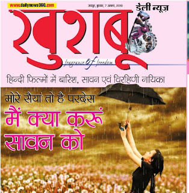
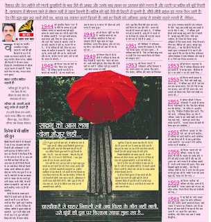
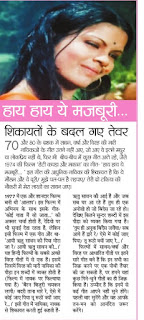

राजस्थान पत्रिका ग्रुप के अखबार डेली न्यूज में प्रकाशित लेख
“मोरे सैयां तो है परदेस- मैं क्या करूं सावन को”
हिन्दी फिल्मों में वर्षा, सावन एवं विरहिणी नायिका
वैशाख और जेठ महीने की तपती दुपहरियों के बाद जैसे ही आषाढ़ और उसके बाद सावन का आगमन होने लगता है और धरती पर बारिश की बूंदें गिरती है, वातावरण में शीतलता छाने से भीषण गर्मी से राहत मिलती है। बारिश की बूँदें जैसे ही मिट्टी में घुलती है; सौंधी-सौंधी महक हर तरफ फैल जाती है । पेड-पौधे झूम-झूम कर मानों मेघों का-बरखा कास्वागत करते दिखते हैं। वर्षा हर किसी को आत्मिक आनंद सेसराबोर करने लगती हैं।


"बरषा काल मेघ नभ छाए - गरजत लागत परम सुहाए"।
शायर परवीन शाकिर कहती हैं – “बारिश हुई तो फूलों के तन चाक हो गए-मौसम के हाथ भीग के सफ़्फ़ाक हो गए”।
मलिक मोहम्मद जायसी अपने ऋतु वर्णन में कहते हैं-
रँग-राती पीतम सँग जागी।
गरजे गगन चौंकि गर लागी॥
सीतल बूँद, ऊँच चौपारा।
हरियर सब देखाइ संसारा॥
हिन्दी फिल्मी गीतों में भी गीतकारों ने एक से एकलाजवाब वर्षा गीत लिखे हैं और संगीतकारों ने उन्हें इतनी सुन्दरता से विभिन्न रागों में ढा़ल करफिल्मों में पेश किया है कि वे गीत अमर हो गए हैं, पर आज हम उन गीतों का जिक्र नहीं कर रहे, आज बात हो रही है उन हिन्दी फिल्मों के उन वर्षा-विरह गीतों की जिनमें नायक अपनी नायिका को अकेले छोड कर परदेस गया हुआ है या जा रहा है। वर्षा होने केबाद या बादल छाने पर नायक को याद करते हुए कभी बादल, कभी पपीहे तो कभी कोयल से कहती है-“जारे जारे ओ कारी बदरिया- परदेस गए हैं मोरे साँवरिया”!
हिन्दी फिल्मों के सबसे पुराने गीतों में से सबसे पहले जो गीत याद आता है वह है १९३८ की फिल्म भाभी का गीत- “झुकी आई रे बदरिया सावन की”! इस गीत में विरह की नायिकाबारिश में कूकते पपीहे को कहती है – “सुन रे हठी पपीहा पापी-पी को नाम न ले-सुन पावै कोई बिरहा की नारी, पी कारन कीजे”।


१९४५ की फिल्म गर्ल (गाँव की गोरी) के गीत “किस तरह भूलेगा दिल” की नायिका काली घटाओं से ना बरसने को कहती है- “ओ घटा काली घटा अब के बरस तू ना बरस/ मेरे प्रीतम को अभी परदेस है भाया हुआ”।
१९४५ की ही फिल्म मूर्ति का गीत है “बदरिया बरस गई उस पार” की नायिका कोयलिया से चिढ़ कर उलाहना देती है “कूक-कूक कर कूक कोयलिया/अपना पिया बुलाए/सोए दर्द जगा मत बैरन/याद किसी की आए मेरे मन के सूने द्वार”!
१९५१ की फिल्म शोखियां जिसके संगीत महान संगीतकारजमाल सेन साहब थे; के गीत पड़े बरखा फुहार पड़े बूंदन फुहार में नायिका कह रही है, “दैया उन बिना कछु भाए ना सखी/ नैना तपत बालम बिना- गले मिलन को ब्याकुल सारे”।
१९४९ की फिल्म लेख में भी दो गीतों में नायिक के विरह की पीड़ा दिखती है, पहले गीत- “बदरा की छाँव तरे/ नन्हीं-नन्हीं बून्दियाँ/ हिल-मिल बैठें दोनों यहीं मन भाये रे" नायिका गाते हुए कहती है – “आई बहार बलमा मन नाहीं माने- तुझ बिन सैयां मोहे सूना जग लागे”। इसी फिल्म के एक और गीत –“सावन की घटाओं मेरे साजन को बुला दो” में नायिका घटाओं से कहती है –“आँसू मेरे ले जाओ ले जा के दिखा दो/ सावन की घटाओं/ कहना के तेरी याद में रोती हैं ये आँखें”।
१९५३ की फिल्म हमदर्दमें संगीतकार अनिल विश्वास ने एक ४ अलग -अलग राग क्रमश: गौड सारंग-गौड मल्हार-जोगिया और बहार को मिलाकर एक सुन्दर रागमाला बनाई है, इस रागमाला के गीत ऋतु आए सखी ऋतु जाए सखी री मन के मीत न आए में नायिका दूसरे हिस्से यानि बरखा ऋतु वाले गीत में कहती है“बरखा ऋतु बैरी हमार/ जैसे सास ननदिया/ पी दरसन को जियरा तरसे/ अँखियन से नित सावन बरसे/ रोवत है कजरा नैनन का/ बिंदिया करे पुकार/ बरखा ऋतु बैरी हमार”। यह गीत हिन्दी फिल्मों की सबसे सुन्दर रागमालाओं में से एक है और कहा जाता है कि इस गीत के लिए संगीतकार अनिल विश्वास ने लता मंगेशकर एवं मन्ना डे से १४ दिनों तक रियाज़ करवाया था। महफिल पर पोस्ट "ऋतु आये ऋतु जाये सखी री... चार रागों में ढ़ला एक शास्त्रीय गीत"
१९५३ की ही फिल्म मयूरपंख के गीत में नायिका शिकायत करते हुए कहती है“ये बरखा बहार- सौतनिया के द्वार न जा साँवरे न जा मोरे साँवरे पिया”।
१९५५ की फिल्म पहली झलक के गीत “कैसे भाये सखी ऋत सावन की” में नायिका कह रही है “छम छम छम छम बरसत बदरा/ रोये रोये नैनों से बह गया कजरा/ आग लगे ऐसे सावन को/ जान जलावे जो विरहन की/ कैसे भाये सखी रुत सावन की”।
१९५५ में सलिल चौधरी ने फिल्म ताँगेवाली फिल्म के अपनी ही बांग्ला फिल्म पाशेरबाड़ी के गीत “झिर-झिर बरोशाय हाय कि बोरोशा” के संगीत पर आधारित एक गीत “ रिमझिम रिमझिम झिम बरसे- नैना मोरे तरसे” संगीतबद्द किया है, इस गीत में नायिका “आशा के द्वार खड़ी खड़ी- राह तोरी देखूँ घड़ी-घड़ी” कहते हुए अपनी पीड़ाव्यक्त करती है –“तरसाए सावन की झड़ी तेरे बिना सूना जग साँवरिया”।
१९५५ की फिल्म आजाद के गीत “जारे जारे ओ कारी बदरिया” में नायिका को कारी बदरिया अपने साँवरिया की याद दिला रहे हैं तो वह दु:खी हो कर उनसे कहती है “मत बरसो रे मेरी नगरिया- परदेस गए हैं साँवरिया”!
१९५६ की फिल्म जागते रहो की नायिका, नायक के साथ होकर भी नहीं है! नायक को उसके होने-न-होने की कोई परवाह नहीं है और वह उसे ठुकरा कर जाने लगता है तो नायिका कहती है“ठण्डी-ठण्डीसावन की फुहार/ पिया आज खिड़की खुली मत छोड़ो”। इस गीत में नायिका पपीहे के प्रेम से अपने प्रेम की तुलना करती हुई कह रही है“पपीहे ने मन की अगन बुझा ली/प्यासा रहा मेरा प्यार”!
१९५९ की फिल्म कन्हैया की नायिका की पीड़ा और अलग ही है, वह कहती है- “सावन आवन कह गए कर गए कौल अनेक/गिनते-गिनते घिस गई ऊँगलियों की रेख”!
१९६१ में नई पीढ़ी के ’छोटे नवाब’ राहुल देव बर्मन संगीतकार बने और उन्होने अपनी पहली ही फिल्म “छोटे नवाब” में कमाल कर दिखाया। जब भी इस फिल्म की बात होती है तो एक ही गीत याद आता है – घर आजा घिर आए बदरा साँवरिया/ मोरा जिया धक-धक रे चमके बिजुरिया”!


१९७७ में एक और शानदार फिल्म बनी थी “आलाप” इस फिल्म में अभिनय के साथ इसके गीत “कोई गाता मैं सो जाता” की अक्सर चर्चा होती है, रेडियो पर भी सुनाई देता रहता है लेकिन इसी फिल्म में एक गीत और था “आयी ऋतु सावन की पिया मोरा जा रे/ आयी ऋतु सावन की” यह हिन्दी फिल्मों के सबसे अच्छे विरह गीतों में से एक है। इसमें जिसमें विरह की मारी नायिका की पीड़ाइन शब्दों में व्यक्त होती है (फिल्म में नायक पर फिल्माया गया है) बैरन बिजुरी चमकन लागी/बदरी ताना मारे रे ऐसे में कोई जाए पिया तू रूठों क्यों जाए रे”। इसी गीत में नायिका- नायक से शिकायत करती हुई कहती है ऋतु सावन की आई है और जब सब घर आ रहे हैं तुम ही एक अनोखे हो जो बिदेस जा रहे हो। देखिए कितने सुन्दर शब्दों में इस पीड़ा को व्यक्त किया गया है।“तुम ही अनूक बिदैस जवैया/ सब आये हैं द्वारे रे/ ऐसे में कोई जाए पिया/ तू रूठो क्यों जाए रे”!
फिल्मों में सावन/वर्षा और विरह पर आधारित गीतों पर इतने सारे गीत बने हैं कि इन सभी का जिक्र करने पर एक पोथी तैयार की जा सकती है पर हमने यहाँ कुछ गिने-चुने गीतों का ही जिक्र किया है। उम्मीद है कि इनमें से कई गीत आपने नहीं सुने होंगे-पहली बार सुनेंगे और वह आपके तन-मन को आनंदित जरूर करेंगे।